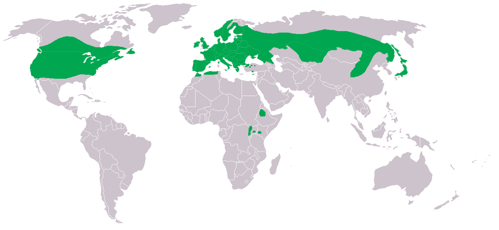
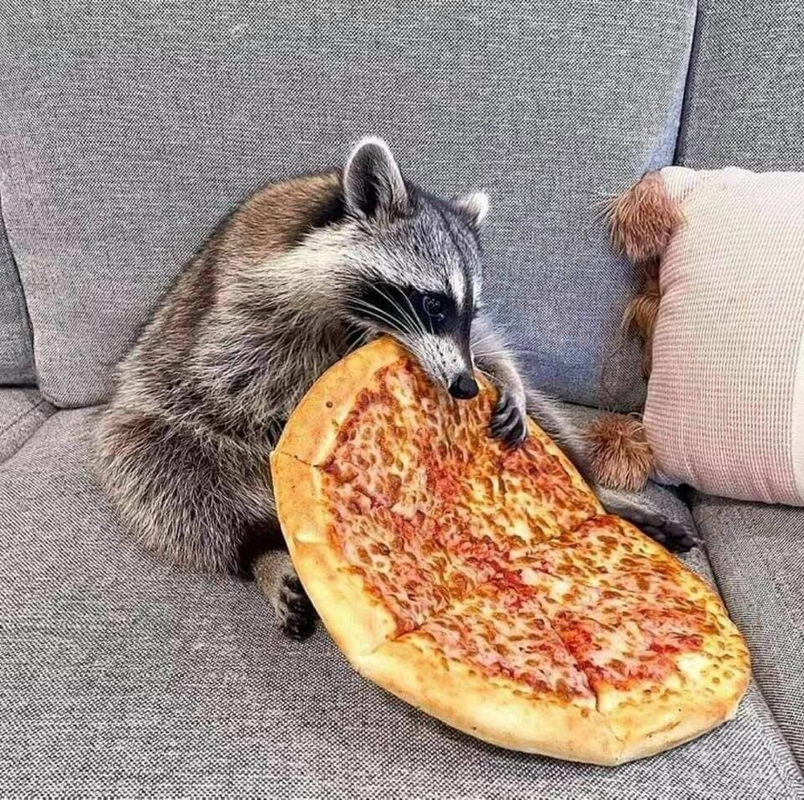
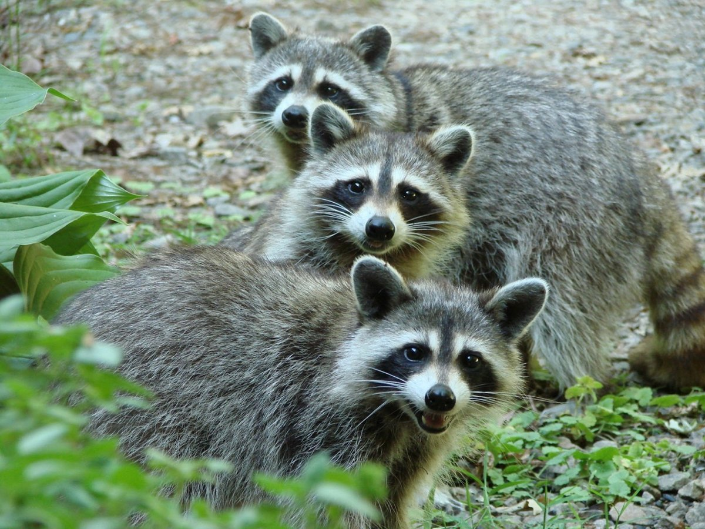

Кто такие еноты?
Еноты - это млекопитающие из семейства куньих. Они известны своим любопытством и способностью лазить по деревьям. Обитают в лесах. Имеют чёрно-белый раскрас, когтистые лапы и круглый чёрный нос. Енотов иногда заводят как домашних животных, из-за их обаятельности.

Места обитания енотов
Еноты обитают в странах Северной Америки, а также в некоторых регионах Южной Америки и Европы.
- Леса: Еноты часто встречаются в лесных массивах, особенно в лиственных и смешанных лесах. Здесь они используют деревья для отдыха и укрытия, а также ищут пищу, такую как орехи, фрукты, насекомые и мелкие животные.
- Поля: Енотам нравятся поля из-за обилия пищи и укрытий. Они питаются семенами сельскохозяйственных культур, такими как кукуруза, пшеница и соя, а также охотятся на мелких животных, таких как мыши, кролики и птицы. Болота: Еноты обитают на болотах, где они находят много пищи, такой как лягушки, раки, рыба, а также ягоды и орехи. Болотные местности обеспечивают им укрытие и возможность спрятаться от хищников.
- Реки: Еноты отлично плавают и часто живут возле рек и озер. Здесь они находят пищу, например рыбу, раков и лягушек, а также используют воду для охлаждения в жаркую погоду.
- Города: В последние годы еноты стали распространенными в городских районах, благодаря наличию обильной пищи, укрытий и возможности взаимодействовать с людьми. В городах еноты часто питаются мусором, проводят время в парках и на свалках.
Питание енотов.
Еноты являются всеядными животными, они могут есть как растительную пищу, так и животную. Однако их диета в основном состоит из мяса и различных насекомых, мелких млекопитающих, рептилий, амфибий, рыбы и моллюсков.
В дикой природе еноты предпочитают охотиться на грызунов, таких как мыши, крысы, белки и кролики. Они также едят яйца птиц, различные виды фруктов, ягод и овощей.
Еноты - отличные охотники и копатели. Они могут находить и добывать еду из-под земли, например, различных насекомых и их личинки.
Кроме того, еноты любят различные овощи и фрукты, которые содержат много витаминов и минералов. Они едят морковь, яблоки, бананы и многие другие продукты.
Если енотам предоставляется доступ к домашней еде, то они с удовольствием будут есть все, что им предложат. В домашних условиях еноты едят много мяса, включая курицу, индейку, говядину и свинину. Также они любят рыбу, особенно лосось.
Факты о енотах
- У енотов очень хорошее зрение и слух, что позволяет им обнаруживать опасность на расстоянии.
- Несмотря на свои небольшие размеры, еноты очень сильные и могут поднимать вес, превышающий их собственный.
- Eноты - отличные пловцы и могут проводить под водой до пяти минут.
- Еноты ведут ночной образ жизни и наиболее активны в темное время суток.
- Еноты имеют очень гибкий позвоночник и могут протиснуться в очень узкие места.